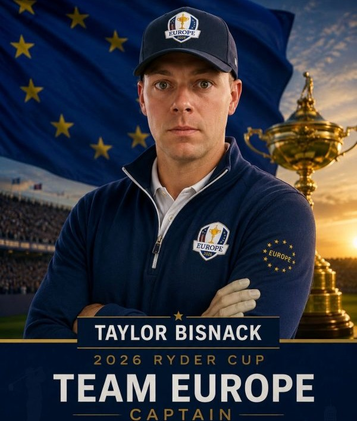
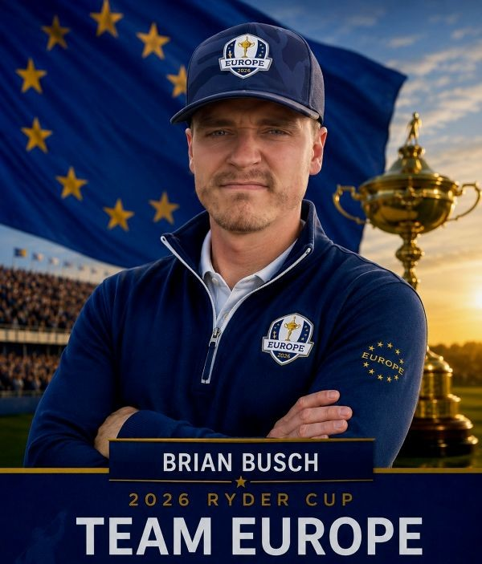
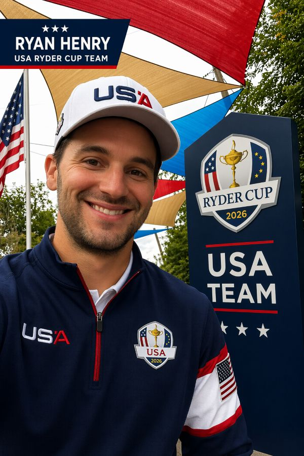
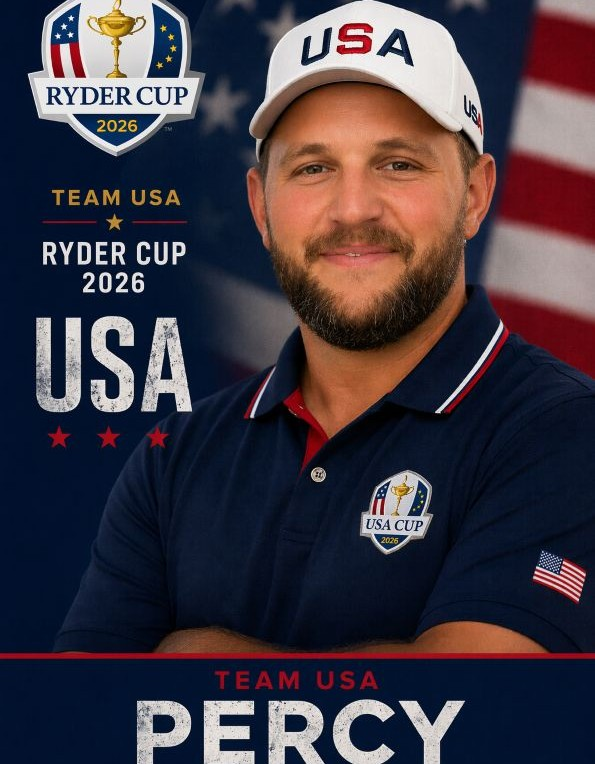
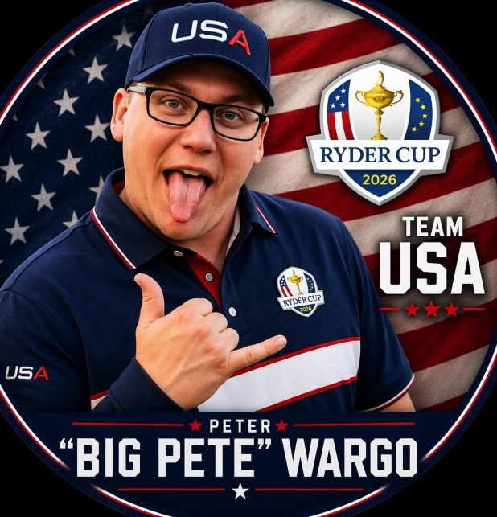

|
 BizHCP: / Shoots: Right Individual RC Record: 7-6-3 Team RC Record: 0-3-1 The captain of Team Europe. Biz remains one the Ryder Cup's most skilled golfers. He logs serious hours on the course, chasing a smooth swing and an even smoother vibe—often aided by a well-timed edible, or whatever else you can find in his cart cubby. When he’s not striping drives or lining up putts, he’s probably talking about his cat or showing you photos you didn’t ask for but end up loving anyway. Easygoing, social, and surprisingly dialed in when it counts. He will have his hands full this tournament with matchup decisions and lineup choices, but that won't stop him from shooting low. |
SteveHCP: / Shoots: Right Individual RC Record: 5-2-1 Team RC Record: 0-1-1 The captain of Team USA. Steve is a Texas-based grinder with a quiet edge and a game built for big moments. He comes into this tournament as one of the top golfers in the field. Fresh off offseason hernia surgery, he’s back in form and making his third Ryder Cup appearance. Around the team, he’s known for clutch play, dry humor, and one minor flaw: if you text him, don’t expect a quick reply. Known for staying cool under pressure and delivering when it counts, Steve brings experience and quiet confidence to the locker room. If you ask him for any advice, on or off the course, he will just reply with two words: Hammer Oil |
BarnesHCP: / Shoots: Right Individual RC Record: 7-8-1 Team RC Record: 3-0-1 Tyler Barnes is a golfer you hear before you see—because by the time his drive lands, it’s already 40 yards past yours. He's known as “Mr. 305” for his effortless power off the tee. By day, he works as a dedicated physician’s assistant, bringing care and precision to his patients—though that same precision doesn’t always translate to his spelling. What Tyler lacks in orthographic accuracy, he more than makes up for in raw distance and confidence. Whether he’s bombing drives or trying to spell “birdie” (and getting close enough), Tyler Barnes is a memorable presence on any course. |
 BuschHCP: / Shoots: Right Individual RC Record: 6-7-3 Team RC Record: 3-0-1 Busch is a familiar sight on the course. His dedication to the game is unmatched, and it shows in a swing that’s as consistent as his presence in the group. Simply put, he’s one of the best sticks in the lineup. Off the course, Busch has a well-known zero-tolerance policy for dandelions. A single yellow dot in the yard is enough to ruin his day, and his lawn care standards are almost as precise as his short game. Whether he’s grinding out pars or sticking approach shots close, Busch proves time and again that he’s the one everyone’s chasing on the leaderboard. |
MattHCP: / Shoots: Right Individual RC Record: 8-6-2 Team RC Record: 1-2-1 Matt spent last year battling a hitch/pump in his golf swing that looked like it needed its own timeout between backswing and downswing. This season? It’s gone. With a smoother move and a dangerous amount of confidence, Matt is finally letting the swing fly. Off the course, he remains a devoted fan of Kim Possible, which explains the occasional “What’s the sitch?” after a missed putt. Matt is a Ryder Cup staple who always shows up when the competition gets tough. The question is no longer "how many pumps?" but rather "how many birdies?" when it comes time to start the round. |
 RyanHCP: / Shoots: Left Individual RC Record: 10-5-1 Team RC Record: 3-0-1 Ryan’s golf game has mysteriously lost a little touch at the start of this year — delicate chips have turned into adventures, and putts seem to break exclusively away from the hole. Some blame rust, but most suspect his energy has been redirected toward maintaining complete dominance in fantasy sports. While his waiver wire instincts remain elite, the short game has paid the price. Still, nobody’s counting him out; a hot streak is always within grasp, His Ryder Cup record speaks for itself, and make no mistake Ryan is the definition of a gamer. If you're facing Ryan you ought to bring your A game. |
IwanHCP: / Shoots: R Individual RC Record: 1-7 Team RC Record: 0-2 Iwan is impossible to miss on the golf course—mostly because his fluorescent-white long legs can be seen from three fairways away. A devoted Dixon Dallas fan, his playlist somehow causes more discomfort than his swing. Around the greens, he gets so handsy with his chips you'd think he was trying to date them. The good news? His short game has touch. The bad news? Nobody wants to know how much touch. If you're playing Eric you need to keep a sharp mental focus, and maybe some protection... whatever you deem that to be. |
KleinHCP: / Shoots: Right Individual RC Record: 11-5 Team RC Record: 2-1-1 Klein is a soon-to-be dad who is a Ryder Cup assassin with a record that speaks for itself. He's known for clutch putts, questionable club selections, and highlight reel club throws. Klein keeps teammates entertained with his signature jokes about standing in traffic or threatening to run his truck off the highway after a bad hole. While he may not openly admit how much he loves golf, his group texts, equipment purchases, and Ryder Cup performances tell a different story. Klein continues to prove that whether it's raising a family or raising a trophy, he's ready for the challenge. |
|
 PercyHCP: / Shoots: Left Individual RC Record: 10-3-3 Team RC Record: 1-2-1 Percy is the proud owner of the most boring golf game in the field. While others chase hero shots and viral highlights, Percy prefers the revolutionary strategy of hitting fairways and finding greens. Fresh off the acquisition of a new putter, Percy comes in with renewed confidence and a marginally better short game. Despite generating all the drama of a tax seminar, his Ryder Cup record speaks volumes. Consistent, steady, and annoyingly effective, he's become one of the toughest points on the board to take down. |
PuddyHCP: / Shoots: Right Individual RC Record: 8-7-1 Team RC Record: 1-2-1 Few athletes have ever experienced the kind of heater Puddy is currently riding. Whether it's women, concerts, cold drinks, or somehow all three at the same time, he's in the middle of a generational run that deserves its own documentary. On the course, Puddy's driver has absolutely no allegiance to the fairway and often appears to be operating under its own set of instructions. Yet somehow, once he gets within 100 yards, he transforms into a magician. Never far from a fresh lip pillow and always ready for a good time, Puddy brings an unmatched combination of vibes and volatility to every Ryder Cup. |
ToddHCP: / Shoots: Right Individual RC Record: 6-9-1 Team RC Record: 2-1-1 Known throughout the tournament as "The Midnight Gunner," Todd is equipped with grips so large they should require special permitting. Fortunately, his hands are large enough to handle them. Todd is a resereved individual, unless he's on vacation - he transforms into an entirely different human being. Scientists have yet to explain the phenomenon. That mystery transfers onto the course because sometimes you don't know where his ball is going. Despite this, Todd has been playing some lights out golf and is quickly becoming someone who can flip the script in this tournament. When the lights are brightest, the Gunner is usually firing. |
 PeteHCP: / Shoots: Right Individual RC Record: 9-5-2 Team RC Record: 1-2-1 Around the course, Pete is known for two things: an unwavering loyalty to Coors Light and a 7-wood that should probably be tested for legality. Pete treats it like a secret weapon. Fairway, rough, trouble, pressure—it doesn't matter. If the 7-wood is in his hands, opponents know something good is about to happen. Affectionately known as "Puttin' Pete," he's one of those players who are more comfortable when a match comes down to six feet. His Ryder Cup record is sound, and when the pressure rises, Puttin' Pete tends to do what he always does—pull the 7-wood, get to the green and make the putt. |